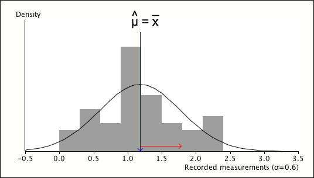

We now introduce a simple method for estimating a parameter \(\theta\).
Definition
If \(\{X_1, X_2, \dots, X_n\}\) is a random sample from a distribution whose mean, \(\mu(\theta)\), depends on an unknown parameter, \(\theta\), the method of moments estimator of \(\theta\) is the solution to the equation
\[ \mu(\theta) = \overline{X} \]We now illustrate this with a simple example.
Estimating a normal distribution's mean (σ known)
Consider a random sample from a normal distribution whose standard deviation, \(\sigma\), is a known value.
\[ X \;\; \sim \; \; \NormalDistn(\mu,\; \sigma=0.6) \]Since the distribution's mean is \(\mu\), the method of moments estimate is
\[ \hat{\mu} = \overline{x} \]